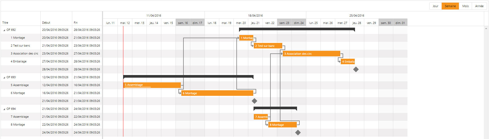

Il existe un certain nombre de différences en termes de fonctionnalités disponibles et d'affichage entre le client léger WPF et le client HTML5.
Ci-dessous la liste des différences pour le client HTML5 :
Les options pour spécifier la plage affichée ne sont pas prises en compte. L'objet s'adapte automatiquement en fonction de la date de la première tâche.
Le formatage des échelles de temps (timeruler) n'existe pas. Il est remplacé par un système de vues (jour, semaine, mois, année).
La position de l'indicateur d'heure courante n'a pas la même position.
Lors du drag & drop d'une tâche, il n'y a pas d'info-bulle donnant les détails de la nouvelle zone de drop.
Le type de colonne de la fonction XmeGanttAddColumn est ignoré. Seule la colonne "Titre" est arborescente et est affichée comme tel s'il y a des enfants aux tâches.
Il n'est pas possible d'afficher en surbrillance les tâches de type jalon et milestone. De même, il n'est pas possible de changer la couleur de ces tâches.
Le concept de date limite n'existe pas.
Ci-dessous, un aperçu deux aperçus d'un même programme diva, l'un exécuté avec le client WPF et l'autre avec le client HTML5
WPF :
HTML5 :
